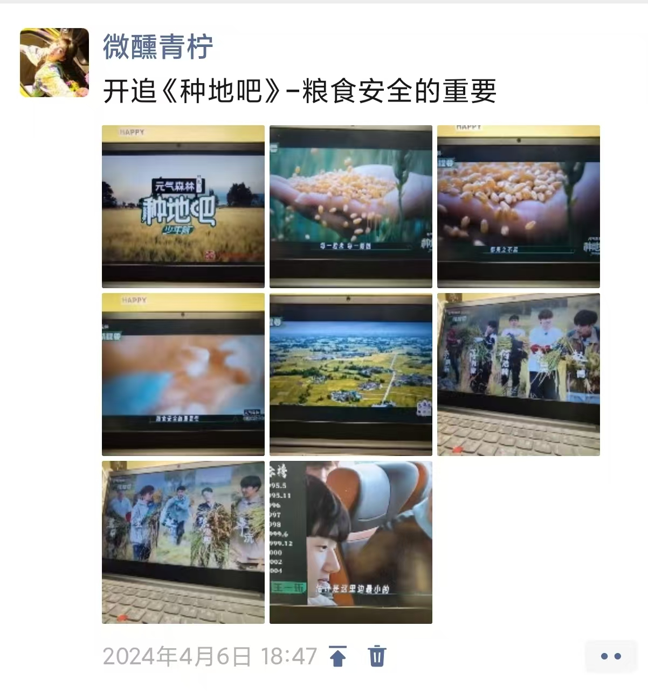

认识他们是在快手上看到一群人在节目上种地开始看《种地吧》。

在这里面记录这群真诚、热血、坚韧、勇敢、团结的少年用自己曾经稚嫩的双手把荒芜变成了有爱的家，亲手刷了每一面墙，亲手贴了每一块砖瓦，亲手制作了每一张桌椅，亲手种下了每一朵花；篮球架上缠玫瑰花和水塘旁搭秋千有多浪漫；100多只动物、3万多颗蔬菜、60多吨水稻、30吨有机肥、4千盆玫瑰；普通农户的蔬菜根本进不了商超；10个少年骑着共享单车、穿着几十块的工作服去建立了属于自己的公司；一个大棚的搭建、一个羊圈的搭建、一个鸡舍鸭舍的搭建都需要不断摸索反反复复；村里各处的流浪狗最终都有了自己的家；人是会被累晕的；下雪也需要在冰水里通沟…他们最终由陌生人变为了家人； 每个人都是这个家不可或缺的一部分； 他们自由而浪漫； 即使没有片酬并且负债累累，也要在520的夜空燃放属于自己的烟花。真的很可惜没有在2022年认识十个勤天，但是现在也不晚，真的好喜欢这种慢综艺，好喜欢他们。他们做了一件件有意义的事情